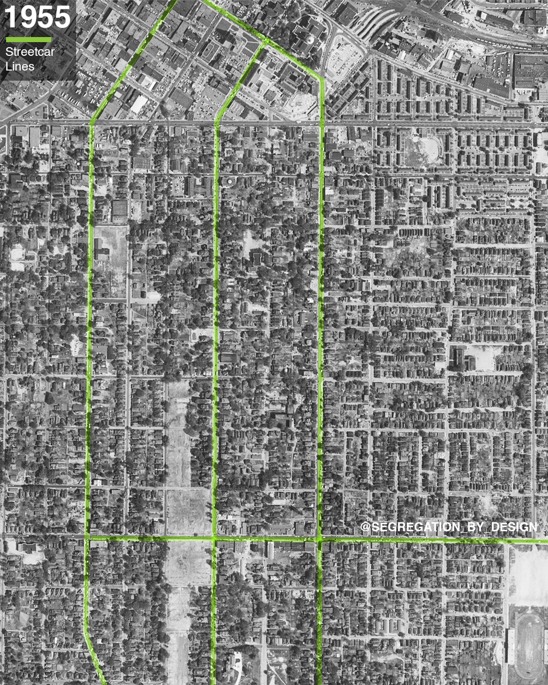

Before 1950
A neighborhood built on connection
Summerhill began as a walkable city neighborhood laid out on Atlanta’s street grid, with streetcar connections linking residents to downtown, jobs, shops, schools, and churches. Georgia Avenue served as a neighborhood main street, and daily life was organized around close blocks, public streets, and local institutions.